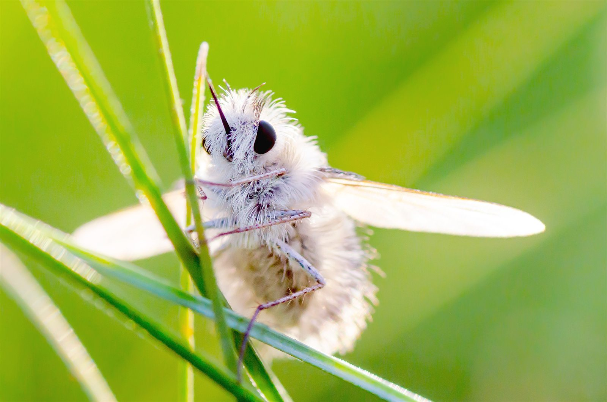
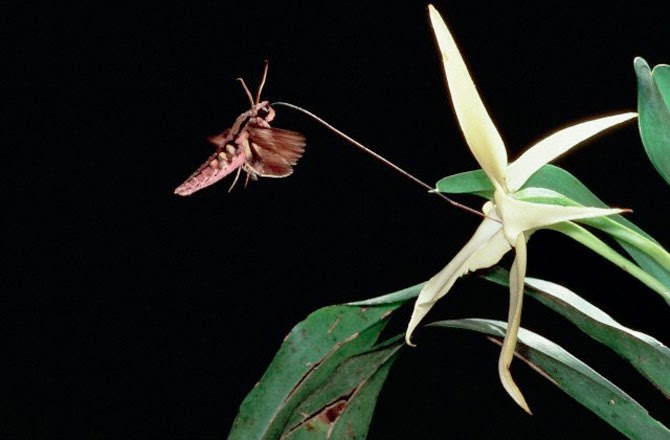
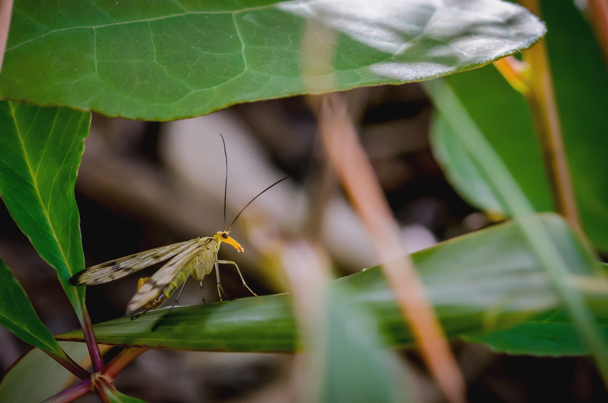
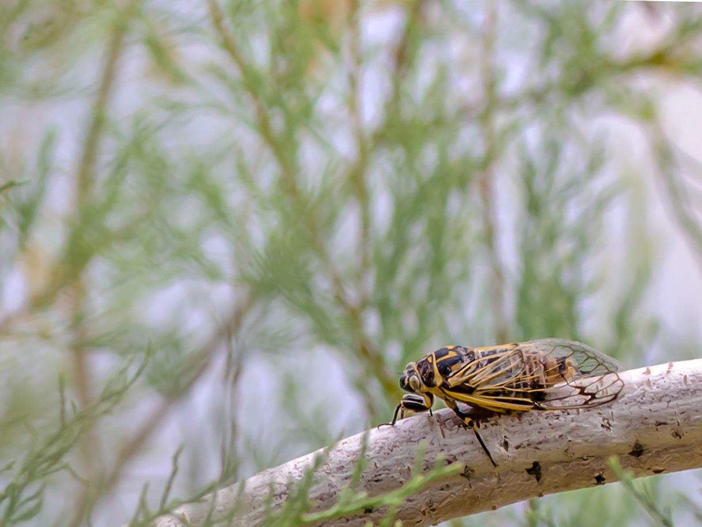
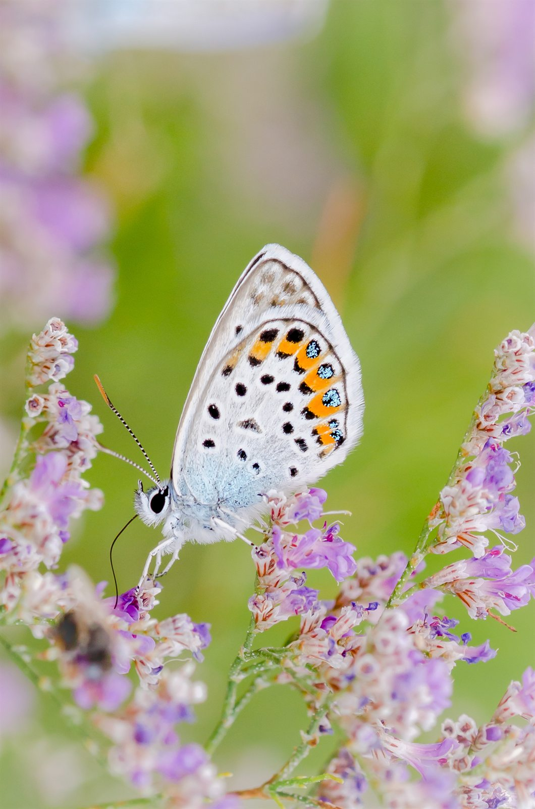
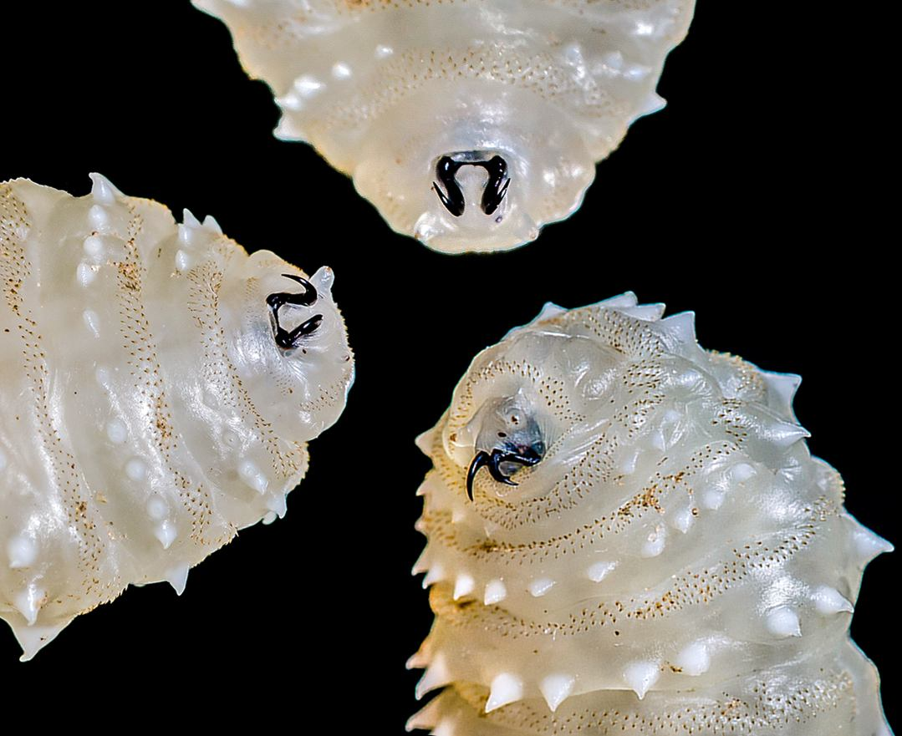
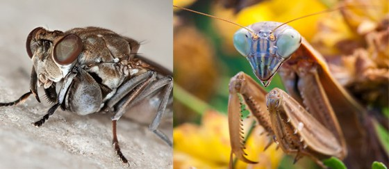
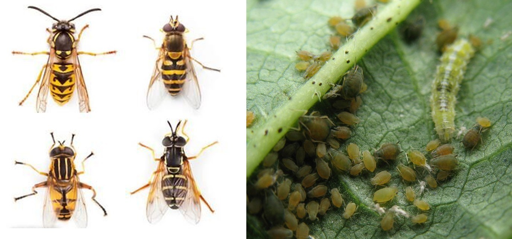
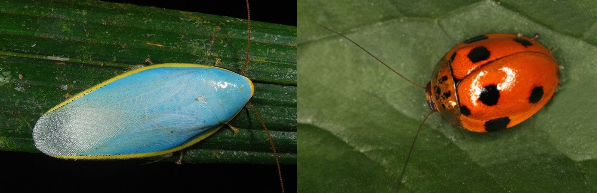
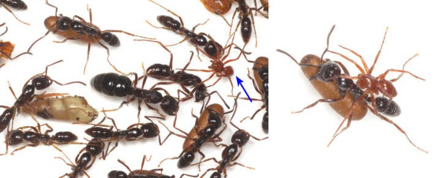

Awards · 2019
两张照片，一个野外习惯
第六届全国昆虫摄影比赛，25 省区 2762 幅投稿，一等奖 4、二等奖 8、三等奖 39、优秀奖 22。


01 / 02六脚蜘蛛
蛛蝇 · 停在鸟羽之间
翅退化、足细长，它看起来像一只蜘蛛，其实是一只蝇。拟态带来的第一眼误判，正是这张照片想说的事。
短笛牧童
绒蜂虻 · 草叶停歇
浑身长毛的绒蜂虻停在草叶上，口器前伸——像一支立在叶间的小绵羊，也像吹笛的牧童。
另有 4 幅作品入选参赛：林荫杀手、戈壁歌王、正有呷蜜意、张牙舞爪。

《中国天蛾科图鉴》
系统收录中国天蛾科物种的中英双语专业图鉴，海峡书局出版，蒋卓衡、黄嘉龙主编。 本人作为图片作者之一签约供图，授权范围覆盖修订版、分册与科普读物等衍生出版物—— 野外的活体生态影像，与手绘图版、标本图互为补充，让读者看到天蛾在自然里的样子。
Background
为什么我的照片长这样
照片不是装饰，
是生境、寄主、行为的证据。
科班出身野生动物保护与利用专业硕士，研究方向为双翅目系统学；研究生期间赴中国科学院上海昆虫博物馆联合培养，整天与标本、显微镜和电镜打交道。
镜头即记录野外采集与生态调查养成拍摄习惯：先求「准」，再求「美」。物种认错的照片，再好看也是错的信息。
为科普供图科普文章与课程课件里的图片由自己拍摄或绘制，不依赖图库素材——从三千字的公众号推文到保护区课程包，视觉体系是同一套。
Selected · 2019—2026
精选照片
生态照、微距、标本与科研图版混排。点开任意一张看原尺寸。
六脚蜘蛛
蛛蝇 · 鸟羽之间
短笛牧童
绒蜂虻 · 草叶停歇

林荫杀手
蝎蛉 · 林下叶背

戈壁歌王
蝉 · 荒漠灌丛

正有呷蜜意
灰蝶 · 紫色花穗

张牙舞爪
双翅目幼虫 · 口钩
图鉴供图
天蛾科 · 悬停吸蜜

两种头部
虻与螳螂 · 复眼

标本四视图
食蚜蝇 · 针插标本

一片叶子的两种尺度
叶蝉与瓢虫

可核对的标本
蚂蚁 · 针插与标注
Licensing & shoots
图片授权与约拍
所有展示作品均为本人拍摄（ALL SHOTS TAKEN BY MYSELF）。出版物、展板、课件与自媒体按用途授权。
图片授权
生态微距与科研图版可用于出版物、展板、课程课件与自媒体；提供原尺寸文件与物种、拍摄地说明。
约拍与摄影指导
自然观察活动跟拍、微距摄影工作坊教学；曾面向志愿者开设微距生态摄影工作坊。
科普配图定制
为科普文章与展览定制实拍组图或手绘风格图版，含物种鉴定与文字说明。
Contact
要图、约拍、
或者只是想认个虫。
图片授权请说明用途、尺寸与期限；约拍请提前给出时间、地点与目标物种。备注「摄影」通过更快。

WECHAT · 扫码备注「摄影」